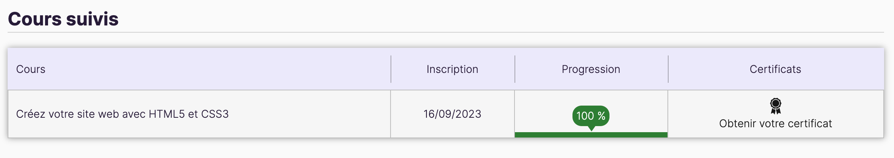

A la suite de la certification en HTML et CSS sur le site d'Openclassroom cela m'a permis de découvrir et donc apprendre le HTML (HyperText Markup Language) qui est la base de la création de pages Web. En comprenant le HTML, on acquiert une compréhension de la structure et de la présentation des pages Web. Dans cette certification, on nous apprend que le HTML permet de créer et de modifier du contenu Web, nottament par la structuration de texte, l'insertion d'images, de liens hypertexte, de vidéos et d'autres éléments présente dans les pages Web. La connaissance du HTML reste essentielle pour comprendre le fonctionnement du Web moderne
